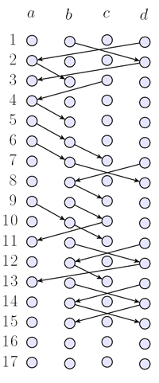
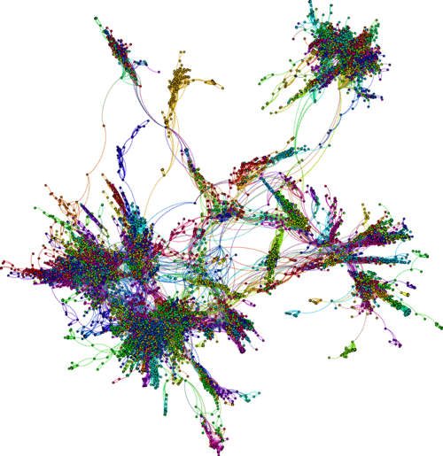
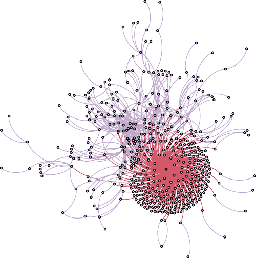
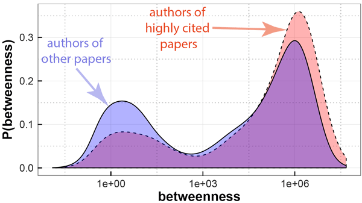
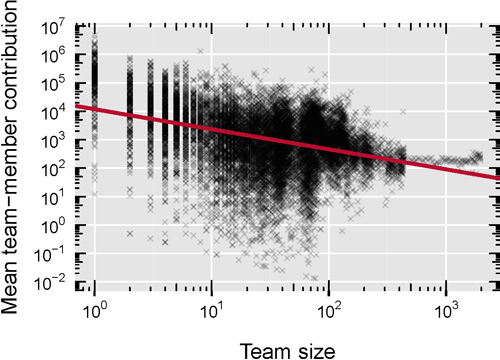

My research addresses foundations of algorithmic and statistical data analysis. In many of my works, I model and analyze large data sets from a graph or network perspective. I also develop new data science techniques for complex relational data, and apply them in the context of software engineering, information system and computational social science. My approach is quantitative, data-driven and interdisciplinary, combining methods from computer science, mathematics and physics.
Relational data mining techniques play an important role in many disciplines, such as information science, sociology, bioinformatics or economics. They provide new ways to explore large corpora of data which capture dyadic relationships, interactions or links between documents, humans, genes, or financial institutions. However, we now increasingly have access to complex data that capture more than just dyadic relations.
Examples include multi-relational data, time-stamped relations, relational data with noise, or sequential data. The question when a graph abstraction of such complex relational data is justified has not been answered satisfactorily.
To address this problem, I develop new algorithmic and statistical data mining techniques for
relational data with complex characteristics. I am particularly interested in new ways to infer patterns in sequential data on networks. In a recent work, I developed a new method (i) to test when a network abstraction of such data is justified, and (ii) to infer optimal higher-order graphical models which generalize network-analytic methods. It has been implemented in the python package pathpy, which is available on github.

Time-unfolded notation of temporal network with four nodes and 24 time-stamped links.
Graph analytics and (social) network analysis have become cornerstones of data science. They are widely applied to relational data studied in disciplines such as computer science, physics, systems biology, social science or economics. However, we are increasingly confronted with high-frequency, time-resolved data which not only tell us who is related to whom, but also when and in which sequence these relations occurred. The analysis of such data is still a challenge. A naive application of network analysis and modeling techniques discards information on the timing and ordering of relations, which is the foundation of so-called causal or time-respecting paths, i.e. it is needed to answer the question who can influence whom. In my research, I study the effects of temporal ordering in time-resolved relational data from real-world systems. Using a combination of information-theoretic and statistical methods, we could demonstrate that temporal correlations in data from social and biological systems break the transitivity of causal paths. We further showed that the application of network-based data analysis and modeling techniques as well as algebraic methods to time-stamped data yields wrong results.
Example for a diffusion process in two temporal networks with dynamic topologies. The topology, frequency, and temporal distribution of links is identical in both temporal networks. However, the order in which links in the left example occur exhibit correlations that significantly speed up diffusion.
Addressing the problem that common graphical representations of relational data discard information on the temporal ordering of relations, we developed a data analysis framework based on higher-order graphical models. Extending the common network perspective, it allows to combine information on both topological and temporal characteristics of time-resolved relational data into compact probabilistic graphical models.
This approach provides new ways to (i) model dynamical processes like diffusion, cascades or epidemic spreading, (ii) detect temporal-topological clusters based on higher-order Laplacians and spectral methods, (iii) assess the importance of nodes, and (iv) study the controllability of complex systems. This research aims at methodological advances which not only provide us with novel data mining techniques, but whose impact reaches beyond computer science, with applications in the modeling of complex systems in physics, systems biology, social science and economics.

A network perspective on the architecture of the Open Source Software jena.
Software systems are at the heart of the digital society: They control critical infrastructures like communication or energy systems, fuel the increasing automation in industrial manufacturing and are key drivers of the digital economy. Despite this importance, the development of complex software systems is still a fundamental challenge. Credible reports indicate that the majority of software projects run over time or budget -- or fail altogether, resulting in billions of dollars wasted every year. And while technical aspects like, e.g., programming techniques, testing methods, or developer support tools have improved significantly over the past years, our understanding how human and social factors contribute to success or failure of software projects is still in its infancy.

Collaboration network of the Open Source Community gentoo
Addressing these challenges, I use data science to quantitatively study collaborative software engineering processes. As an example, we use network analysis and statistical modeling to study the evolution of software architectures based on large-scale data from software repositories. This not only allows us to trace the maintainability of software systems. We can also assist developers in the refactoring of code. We further extract large data sets from online support tools, and analyze them to better understand how social factors influence software development processes. This approach has helped us to uncover social mechanisms at work in software development, to quantify risks in Open Source communities, and to improve information systems used by software development teams.

Centralities of scientists in the collaboration network of their respective fields. Red: authors of highly cited papers. Blue: authors of other papers.
The increasing volume of available data on social systems opens new opportunities for large-scale, quantitative studies of social phenomena. Such studies can help us to better understand how humans communicate and collaborate, what makes teams productive, what mechanism are at work in successful social organizations, and how technology shapes human behavior. This research not only offers new ways to address long-standing issues in the social sciences, it is also crucial to model, design and manage socio-technical systems.

Relation between size of a software development team (x-axis) and productivity of its members (y-axis).
Addressing these questions, I use data science techniques to study social organizations.
In a large-scale analysis of data on more than 30,000 developers in 58 Open Source Software projects, we could validate and quantify the Ringelann effect known from social psychology and organizational theory. We could also show how coordination structures in software development teams influence the productivity of team members. Studying large bibliographic data sets, we could further show how social mechanisms influence editorial processes and citation practices. These works provide actionable insights for project management and policy-making.